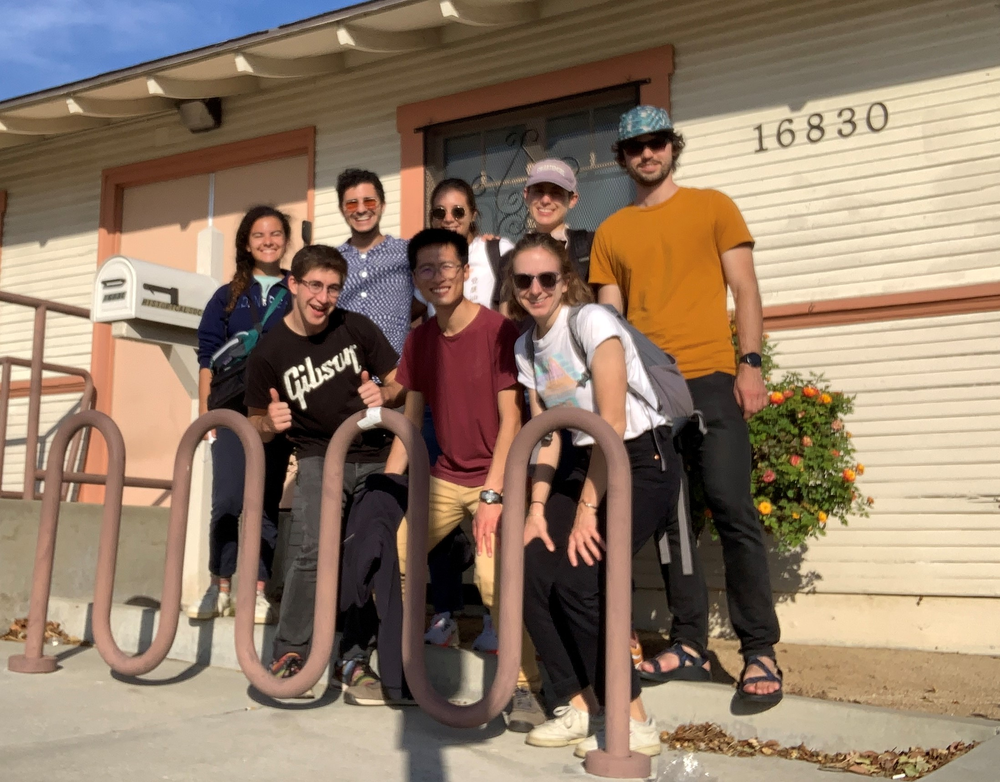

Acknowledgments
The authors would like to acknowledge the Department of City and Regional Planning (DCRP) at the College of Environmental Design (CED) at the University of California, Berkeley, Rakhi Basu, Mayor Acquanetta Warren of Fontana, the staff and elected officials from the City of Fontana, our colleagues at the National Institute of Advanced Studies at the Indian Institute of Science, Scott Moura, and countless other faculty and mentors who have gone above and beyond in providing guidance and input into our report.
We want to extend a special thanks to our professor, Karen Trapenberg Frick, who provided us with invaluable support and feedback throughout this process. We could not have completed this report without you.
We would like to thank our course colleagues Kenji Anzai, Karen Chavez, Julia Flessel, Hunter Oatman-Stanford, Edgardo Vazquez, and Shiying Wang. We would also like to thank Eugene Lau for layout assistance.
Our Team
We are a team of eight graduate students studying transportation policy, planning, and engineering in the Department of City & Regional Planning at the University of California, Berkeley.
-
Chun Ho Chow, MCP & MS, 2022
Ethan Ebinger, MCP & MS, 2021
Jonathan Kupfer, MCP & MS, 2021
Sydney Maves, MCP 2022
Olivia Ortiz, MCP 2022
Maya Price, MCP & MS, 2021
Molly Sun , MCP 2022
Tyler Truksa, MS, 2021
Instructor: Professor Karen Trapenberg Frick
Course: CYPLAN 218, Transportation Planning Studio, Fall 2021
Department of City and Regional Planning, University of California Berkeley